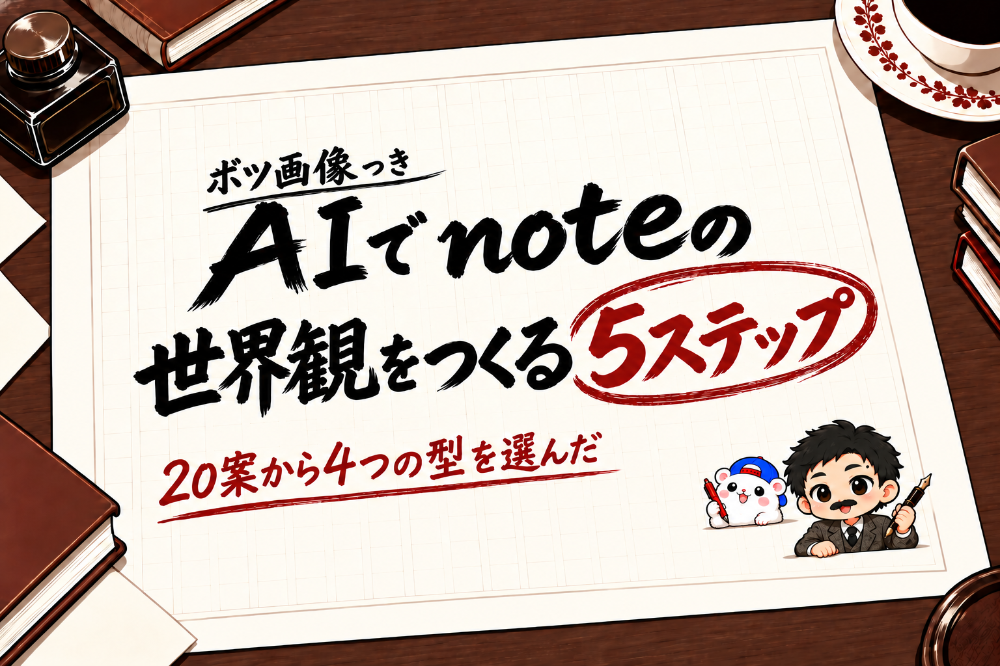

noteを販売するなら、まずAIで世界観を固めるのがおすすめです。
人は、見慣れた「それっぽさ」があるものを、安心して受け入れます。
アイコン・ヘッダー・記事の画像がばらばらだと、中身がよくても、素人っぽく見えてしまいます。
やることは、この5つだけです。
- コンセプトを1行で決める
- キャラクターを、メインとサブの2人で作る
- アイコンを作る
- ヘッダーを作る
- アイキャッチと図解の「型」を作る
例えば、ぼくのAIアカウントでは、この5つを、Canva Craft(Canvaの新しい画像生成AI)とCodex(ChatGPTの、パソコンの作業を任せられるAI)で作りました。
アイキャッチの型は20案を出して、4つにしぼりました。
ボツになった案も、見比べたシートも、そのまま見せます。
1. コンセプトを1行で決める

世界観は、コンセプトから逆算します。
まず「だれに、何を届けるアカウントか」を1行で書きます。
そこから、コンセプトに合う「場所」か「時代」を1つ決めます。
これが決まると、色・小物・文字の形が、あとから自然に決まります。
例えば、ぼくのAIアカウントは「AIを使って、noteで稼ぐ」。
noteは文章のメディアなので、世界観は「明治大正の文豪の書斎」にしました。
色は、生成りの原稿用紙・墨の黒・えんじの赤・こげ茶の4色だけ。
小物は、原稿用紙・万年筆・インク瓶です。
2. キャラクターは、メインとサブの2人で作る

キャラクターは、自分の写真からでも、歴史上の人物を参考にしてもかまいません。
大事なのは、AIに頼むときに、参考の画像を必ずそえることです。
言葉だけで頼むと、毎回ちがう顔になります。
例えば、ぼくは前から使っているちびキャラを参考に入れて、「夏目漱石のような文豪風にして」と頼みました。
もう1つのポイントが、サブキャラクターです。
1人だと、掛け合いができません。
サブがいると、会話の形で説明できて、ほどよいすきが生まれて、見る人があたたかい気持ちになります。
ぼくの場合は、白いハムスターの「チャム」がサブです。
キャラクターが決まったら、見分けの目印を3つ、文章にしておきます。
(例: ほくろは向かって右・口ひげ・後ろ向きの青いキャップ)
あとで画像を確かめるときの基準になります。
3. アイコンは、5案出して1つ選ぶ

できあがったアイコン。前から使っているちびキャラを、文豪風にしてもらった
アイコンは、いちばん小さく、いちばん多く見られる画像です。
1案で決めずに、3〜5案出してもらって、選びます。
頼み方は、キャラクターの参考の画像+世界観の場所+「顔を大きく」。
丸く切られても顔が見えるかを、選ぶときの基準にします。
4. ヘッダーは「世界観+実績」の1枚

できあがったヘッダー。文豪がnoteを書いている情景+実績の題字
X・note・YouTube・Substackは、ヘッダーが使えます。
ヘッダーには、2つを入れます。
- 世界観の情景(キャラクターが、コンセプトの場所で何かをしている)
- 実績の言葉(このアカウントを見る理由になる)
頼むときは、参考の画像・構図・入れる文章・キャラクターをまとめて伝えて、3〜5案出してもらいます。
よさそうな1つを選んで、そこから直していきます。
例えば、ぼくのヘッダーは、文豪がnoteを一生懸命書いている情景に、「AI×noteで月50万円」の題字を入れました。

アイコンとヘッダーがそろうと、プロフィールの見た目がひとつの世界になる
5. アイキャッチと図解は「型」を決める

比較シート。5つの方向から、推しを1つずつ。下は一覧で小さく見たとき
記事の画像を毎回ゼロから作ると、見た目がばらばらになります。
アイキャッチは、構図の「型」を3〜4つ決めて、記事の中身で使い分けます。
型の作り方は、こうです。
- 自分の記事を1本お題にして、「この記事のアイキャッチを、5つの方向で作って」と頼む
- 見比べて、いいものを残す
- いいものが複数あれば、記事の中身で使い分ける型にする
例えば、ぼくは5つの方向×4案=20案を出して、4つの型を残しました。
- 原稿用紙の題字: ふだんの記事
- 原稿に赤入れ: 手順・コツの記事
- 書斎の情景: 読みものの記事
- 号外の新聞: 実績の報告

5つの方向×4案=20案。ここから4つの型を残した
ボツは「文庫本の表紙」です。
いちばん上品でしたが、縦書きなので、長い題名が入りませんでした。

ボツ: 文庫本の表紙。上品だけど、長い題名が入らない
図解も、同じ4色・同じ原稿用紙の上で作ると、記事の中まで世界観がつながります。

前の型。同じ記事のアイキャッチ

文豪の型で作り直した、同じ記事のアイキャッチ
型を作ってわかった、AIへの頼み方5つ
文字入りの画像をAIに頼むときは、この5つを書くと、まちがいがぐっと減ります。
- 何の画像かを最初に書く(「ブログ記事のアイキャッチ」)
- 色はカラーコードで書いて、強い色は1つ
- 入れる文字は「これだけで1字もちがえない」と書いて「」でくくる。最後に「ほかの文字・ロゴは入れない」
- 直しは「◯を△に直して。ほかは変えない」と1つずつ
- 横長にも使うなら、はじめから横長で別に作る。「上下のはし12%に、文字と顔を入れない」と書く
例えば、この頼み方で56枚を作ったときは、文字のまちがいは0でした。
文字が少なく、大きいほど、AIはまちがえません。
うまくいかなかったことも、3つあります。
- はんこ(落款)を頼むと、中が空の四角や、読めない字になった → はんこは頼まない
- ほくろの位置は、「直して」と2回頼んでも動かなかった → 目印が正しい案を選ぶ
- 横長に切ったら、はしの小さな札が切れた → 5番の一文を足したら、切れなくなった

ボツ: 題字の右に、中が空の四角のはんこ

ボツ: はんこの中に、読めない字
そのまま使える頼み方を、のせておきます。{ }を自分のアカウントに書きかえてください。
ブログ記事のアイキャッチ。世界観は「{場所・時代}」。1枚目の画像と同じテイスト。
色は{色1 #カラーコード}・{色2}・{色3}・{色4}の4色だけで、強い色は{色}1つ。
キャラクターは2枚目の画像の{メインの目印3つ}と、{サブの目印3つ}。見た目は添付画像のとおり。
入れる文字はこれだけで1字もちがえない:「{小見出し}」「{タイトル1行目}」「{タイトル2行目}」。
ほかの文字・ロゴ・数字は入れない。
ツールは、Canva CraftとCodexの使い分け

同じお題・同じ参考画像で、1回ずつ作った比較
Canva Craftは、2026年10月23日にCanvaが出した画像生成AIです。
Canvaの「ドリームラボ」から使えます。
同じお題で、Codexの画像生成と比べてみました。
| Canva Craft | Codex | |
|---|---|---|
| 1回で出るもの | 4案 | 1枚 |
| かかった時間 | 約20〜25秒 | 1枚 約2〜4分 |
| 日本語の文字 | 大きい文字はほぼ正しい。小さい文字が多いと、まちがいが混ざる | まちがいゼロの1枚に強い |
| 直し | 「◯を△に」で約20秒 | 画像の編集で直す |

Canvaで「59日を60日に直して。ほかは変えない」と頼んだ結果。約20秒
Canva Craftは、ChatGPTの画像とはちがう、AIっぽさの少ない絵になるのも、いいところです。
使い分けは、こうです。
- 案を出す・型を決める: Canva Craft(速く、たくさん見比べられる)
- 決まった型で、何十枚も作る: Codex(まちがいの少ない1枚を、まとめて作れる)
例えば、型が決まったあと、教材の図解と表45枚と、記事11本のアイキャッチ・図解を、Codexでまとめて作り直しました。
1枚あたり約2〜6分。
文字は、パソコンの文字の読みとりで古い版と1枚ずつ照らし合わせて、まちがいは0でした。
Canvaは、プロ(月払いで月1,180円)に入ると、高品質の画像生成が月200回まで使えます。
ChatGPTやClaudeには、Canvaをつなぐコネクタもあります。Canva Craftで画像を作るところまでできるかは、公式の案内で確かめてから使ってください。
作った画像をどこで使うかは、各サービスの規約を確かめたうえで、ご自身の責任で。
販売サイトによっては、AIのイラストを商品の画像に使えないところもあります。
動画も、世界観は「見慣れた形」で

ショート動画をやる人は、動画にも世界観が出ます。
ぼくがやっているのは、シンプルです。
- 背景に動画を流して、ぼかす(動かすのが大事)
- 手前に、文字・イラスト・図解・画像を入れる
人は、見慣れたものを見ます。
見慣れないものは、なんとなく違和感があって、見ません。
だから、YouTubeやリールでよくある「あるある」の形を使います。
例えば、キャラクター以外のイラストは、あえて見慣れた素材(いらすとや)を使っています。
全部を画像生成で作るより、「それっぽさ」が出るからです。
まとめ

AIでnoteの世界観を作るなら、この5つの順番です。
- コンセプトを1行で決める(場所か時代を1つ)
- キャラクターは、メインとサブの2人(参考の画像を必ずそえる)
- アイコンは、5案出して1つ選ぶ
- ヘッダーは「世界観+実績」の1枚
- アイキャッチと図解は「型」を決めて使い分ける
案出しはCanva Craft、決まった型での量産はCodex。
世界観がそろうと、はじめて来た人にも「ちゃんとしたアカウントだ」と伝わります。
あなたのアカウントを1行で言うと、どんな場所・時代になりますか?
▼ネタの作り方から、AIで教材にまとめて売るまで、やったことを1冊にまとめてあります
フォロワーゼロから利益95.8万円まで、54日間の数字と失敗と手順を、全部書いた教科書です。
録音から記事、教材、販売ページ、売れたあとの台帳まで。うちで毎日使っているツールも付録に入れました。
『noteから始める「AI×◯◯」コンテンツ販売の教科書｜フォロワーゼロから利益95.8万円』
販売価格は3部売れるごとに2,000円ずつ値上がりします（上限あり）。内容・最新価格は販売ページをご確認ください。